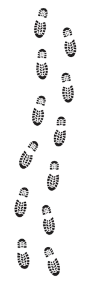
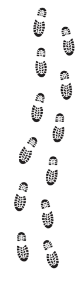

Landmarks
 

Great Pyramids of Giza

There are 3 pyramids (one not pictured to do physical distance from the others). Each was built for Pharaohs: Khufu, Khafre, and Menkaure. Khufu's pyramid, The Great Pyramid, is the northernmost pyramid. It is the biggest and oldest. It originally stood at 481.4 feet. Khafre's pyramid is located in the middle and once stood at 471 feet. Menkaure's pyramid is the southernmost pyramid and stood at 218 feet when it was built. Tourists are allowed to go into The Great Pyramid through narrow tunnels and see the Pharaoh's chamber.
Great Sphinx of Giza
The Great Sphinx is made from limestone like the pyramids. Historians believe that it was built during the time of Pharaoh Khafre because it resembles his face. A sphinx is a human head with a royal headdress and a lion's body This is the world's biggest sculpture spanning 240 feet long and 66 feet tall.
Valley Temple of Khafre
This was the home of Pharaoh Khafre. It was burried by sand and later discovered by egyptologist Auguste Mariette in 1852. Because of its late discovery, it is the best preserved structure from the Fourth Dynasty.

Step Pyramid of Pharaoh Djoser
This pyramid was designed to be a tomb for Pharaoh Djoser during the Third Dynasty. It stands at 204 feet and has 6 layers of steps. The vizer of Djoser, Imhotep, wanted his pharoah to have a tomb that stood out so he thought of making the pyramid look like steps.
The Bent Pyramid of Pharaoh Sneferu
This pyramid was built during the time of Pharaoh Sneferu. It is bent because was an attempt at building a true pyramid. The bottom half has an angle of 52º and was found to be too steep so the upper half was built at a 43.5º angle.
The Red Pyramid of Pharaoh Sneferu
This pyramid is another attempt to create the perfect pyramid. It was built at a 43º angle making it shorter, but more pyramid shaped. It is caleld the Red Pyramid because it was built from red limestone.